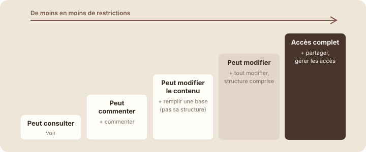

Les niveaux d'accès
À la fin de cette leçon, tu sauras choisir le bon niveau d'accès pour chaque personne, et éviter les partages trop larges.
Étape 1 : comprendre
Quand tu invites quelqu'un, tu choisis ce qu'il a le droit de faire. C'est le niveau d'accès. La règle d'or : donner à chacun le niveau le plus bas qui lui suffit. On ne donne pas la clé du bureau à quelqu'un qui doit juste lire l'affiche sur la porte.
Notion propose cinq niveaux, du plus large au plus restreint :
| Niveau | Ce que la personne peut faire | Pour qui ? |
|---|---|---|
| Accès complet (Full access) | Tout faire, y compris partager la page avec d'autres et modifier les accès. | La responsable de la page. |
| Peut modifier (Can edit) | Modifier tout le contenu, et la structure des bases (propriétés, vues). | Les personnes qui construisent la page avec toi. |
| Peut modifier le contenu (Can edit content) | Pour une base : ajouter et modifier des entrées, sans toucher aux propriétés ni aux vues. | Les personnes qui remplissent une base sans la reconfigurer. |
| Peut commenter (Can comment) | Lire et laisser des commentaires, sans rien modifier. | Une personne qui relit et donne son avis. |
| Peut consulter (Can view) | Lire seulement. | Une personne qui doit être informée. |

Le bon niveau d'accès est le plus bas qui permet à la personne de faire son travail.
Attention : « Accès complet » permet à la personne de partager la page avec n'importe qui, de changer les accès des autres et même de te retirer l'accès. Réserve-le aux responsables. Et ne choisis jamais « Toute personne disposant du lien » pour une page qui contient des informations internes (budgets, données clients, salaires) : un lien transféré par erreur suffit pour qu'un inconnu la lise.
Les accès de Site Orion
Voici comment Emma a réglé les accès de la page « Site Orion ». Pour chaque personne, elle s'est demandé : de quoi a-t-elle besoin pour faire son travail ?
| Réglage trop large | Réglage d'Emma |
|---|---|
| Lucas, graphiste du projet : Accès complet. | Lucas : Peut modifier. Il travaille sur la page, mais n'a pas à gérer les accès. |
| Le client Orion : Peut modifier. | Le client : Peut commenter. Il donne son avis sans pouvoir effacer le travail. |
| Toute l'agence : Peut modifier. | Toute l'agence : Peut consulter, pour être informée. |
| Accès général : Toute personne disposant du lien. | Accès général : Seules les personnes invitées. |
Si Lucas a besoin de plus de droits un jour, Emma pourra toujours les augmenter. L'inverse, réparer une page effacée ou un document qui a circulé, est bien plus difficile.
Le bon niveau pour Emma, Lucas, Sarah et Hugo
Emma partage la base « Projets » de Studio Nova avec quatre personnes. Choisis le bon niveau d'accès pour chacune.
- Ouvre une page que tu as partagée (ou ta page « Projets » si tu as invité un collègue à la leçon précédente).
- Clique sur « Partager ». À droite du nom de la personne, ouvre le menu du niveau d'accès.
Capture d'écran Notion Menu des niveaux d'accès · images/captures/m07-niveaux-acces.png
- Choisis le niveau adapté à son rôle. Le changement est immédiat.
- Pour retirer l'accès, choisis « Retirer » (Remove) en bas du même menu.
Exercice · dans Notion
Le bon niveau pour chacun
- Réponds à l'exercice des quatre personnes ci-dessus jusqu'à obtenir 4 sur 4.
- Pour ton propre travail, note trois collègues et le niveau d'accès que tu leur donnerais sur ta base « Mes projets ».
- Pour chacun, écris en une phrase pourquoi un niveau plus bas ne suffirait pas.
Résultat attendu : trois collègues avec un niveau justifié. Si tu n'arrives pas à justifier un niveau, c'est souvent qu'un niveau plus bas suffit.
Étape 4 : vérifier
À retenir
- Cinq niveaux : Accès complet, Peut modifier, Peut modifier le contenu, Peut commenter, Peut consulter.
- Règle d'or : le niveau le plus bas qui suffit pour faire son travail.
- Accès complet seulement pour les responsables ; jamais de lien public pour des informations internes.
Choisis une réponse avant de valider.
Peut commenter permet de lire et de laisser des remarques, sans risque pour le contenu.
Choisis une réponse avant de valider.
L'accès complet inclut la gestion des accès. Il se réserve aux responsables de la page.